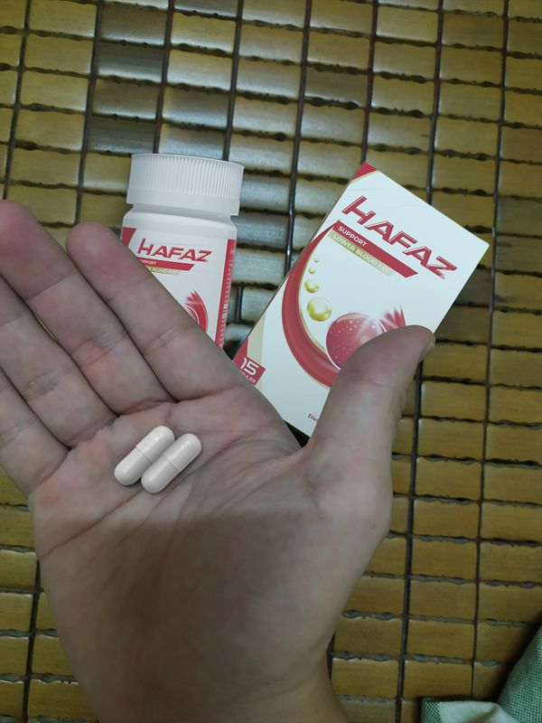
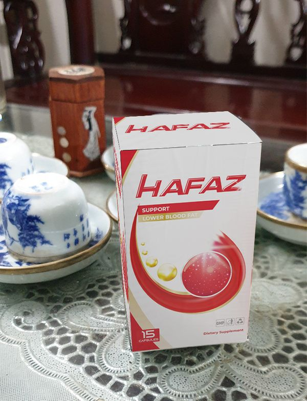

“วิธีการใหม่ของการลดความทุกข์ทรมานจากความดันโลหิตสูง ปวดหัว ความไวต่อสภาพอากาศช่วยให้ผู้คนหลายล้านคนใช้ชีวิตโดยปราศจากความกลัวว่าจะเป็นโรคความดันโลหิตสูง นี่คือการค้นคว้าจิจัยของผู้เชี่ยวชาญด้านความดันโลหิตสูง พร้อมกับการพัฒนาสูตรที่เรียกว่า การไหลเวียนโลหิตแบบคาร์ดิโอธรรมชาติ เป็น ความก้าวหน้าที่รอคอยมานานในการต่อสู้เพื่อการทำงานที่เหมาะสมของระบบไหลเวียนเลือด”
สถิติเป็นเครื่องพิสูจน์ในตัวของมันเอง
มากกว่า 14,000 คน ที่ใช้สูตรคาร์ดิโอไหลเวียนโลหิตเป็นเวลา 28 วัน พบว่าหลอดเลือดได้รับการทำความสะอาดและสามารถมีเรี่ยวแรงกลับไปออกกำลังกายอย่างเต็มรูปแบบ เนื่องจากเป็นส่วนประกอบจากธรรมชาติ จึงปลอดภัย พวกเขาสามารถกลับมาใช้ชีวิตได้ตามปกติ ผู้ที่ใช้สูตรทำความสะอาดหลอดเลือดยังสามารถลดการสะสมของคอเลสเตอรอลที่ไม่ดี และช่วยให้ความดันโลหิตเป็นปกติดีตามเกณฑ์ ขอบคุณมันช่วยให้พวกเขาล้างหลอดเลือดแดง ฟื้นฟูการไหลเวียนที่เหมาะสม และเพิ่มออกซิเจนอวัยวะทั้งหมด เป็นผลให้พวกเขาลดความเสี่ยงของโรคความดันโลหิตสูงได้ถึง 185% และโรคหลอดเลือดสมองถึง 168% ป้องกันตัวเองจากปัญหาความดันโลหิตสูง และ ละทำให้ร่างกายกลับมาแข็งแรงเหมือนคนวัย 20-25 ปี ทั้งหมดนี้เป็นไปได้อย่างไร?
ศาสตราจารย์ วิศณุ ประเสริฐกุล (ผู้เชี่ยวชาญด้านความดันโลหิต) ตัดสินใจที่จะช่วยเหลือภรรยาของเขาจากความล้มเหลวของระบบหัวใจและหลอดเลือดที่นำไปสู่อาการความดันโลหิตสูงร้ายแรงครั้งแรกของเธอ - และนี่คือจุดเริ่มต้นของการปฏิวัติการฟื้นฟู หลังจากหนึ่งปีของการวิจัยในห้องปฏิบัติการขั้นสูงศาสตราจารย์ได้พัฒนาสูตรการไหลเวียนโลหิตที่เป็นธรรมชาติปลอดภัยและใช้งานง่าย ที่จะทำความสะอาดหลอดเลือดแดงจากเนื้อเยื่อ atherosclerotic ลดปริมาณคอเลสเตอรอลที่ไม่ดีและสารพิษใน 28 วัน ด้วยสิ่งนี้จะช่วยเพิ่มการไหลเวียนได้ถึง 180% และช่วยให้มั่นใจว่าเลือดสามารถไหลเวียนได้อย่างถูกต้องไปยังทุกอวัยวะในร่างกายและให้สารอาหารและออกซิเจนที่จำเป็นแก่ร่างกาย เป็นผลให้เซลล์แต่ละเซลล์ได้รับการบำรุงและออกซิเจน 100% ด้วยสูตรนี้การหมุนเวียนของเลือดไม่เพียงช่วยคุณให้พ้นจากโรคความดันโลหิตสูงอย่างรุนแรง แต่ยังช่วยให้คุณสามารถปรับปรุงการมองเห็นและอวัยวะภายใน กำจัดอาการเหงื่อออกและอาการบวมในตอนเช้า
วารสารทางศูนย์วิจัยระดับมืออาชีพได้ยกย่องให้การฟื้นฟูนี้เป็น "ความสำเร็จในฐานะผู้บุกเบิกในการต่อสู้กับโรคหลอดเลือดและความดันโลหิตสูง" และศาสตราจารย์ได้รับรางวัลอันทรงเกียรติมากมายสำหรับความสำเร็จของเขา ต้องขอบคุณสูตรของศาสตราจารย์ แม้แต่คนที่ดิ้นรนกับปัญหาหลอดเลือดและความดันโลหิตสูงในระดับที่รุนแรงก็สามารถ ปลดล็อกการทำงานของหลอดเลือดแดง ในแต่ละวันได้อย่างสมบูรณ์ภายใน 28 วัน ฟื้นการไหลเวียนที่เหมาะสม ทำให้คุณลืมความ
วิธีการแบบเดิมๆ ในการต่อสู้กับความล้มเหลวของหลอดเลือดและความดันโลหิตสูง เปรียบเสมือนกับการจ่ายเงินทิ้ง! อะไรคือเหตุผลที่ทำให้คิดเช่นนั้นนั้น
วิธีการใหม่ของการลดความทุกข์ทรมานจากความดันโลหิตสูง ปวดหัว ความไวต่อสภาพอากาศช่วยให้ผู้คนหลายล้านคนใช้ชีวิตโดยปราศจากความกลัวว่าจะเป็นโรคความดันโลหิตสูง นี่คือการค้นคว้าจิจัยของผู้เชี่ยวชาญด้านความดันโลหิตสูง พร้อมกับการพัฒนาสูตรที่เรียกว่า การไหลเวียนโลหิตแบบคาร์ดิโอธรรมชาติ เป็นความก้าวหน้าที่รอคอยมานานในการต่อสู้เพื่อการทำงานที่เหมาะสมของระบบไหลเวียนเลือด
● การผ่าตัดถือเป็นทางเลือกสุดท้ายการจัดการในรูปแบบ เช่น angiography หรือการผ่าตัดบายพาส ถือเป็นตัวช่วยสุดท้ายเมื่อไม่มีวิธีอื่น อย่างไรก็ตาม เช่นเดียวกับการผ่าตัดในรูปแบบอื่นๆ พวกเขาอาจจะเป็นอันตรายและอาจใช้เวลาถึงหกเดือนในการฟื้นตัวจากสภาพดังกล่าว นอกจากนี้ 97% ของผู้ประสบปัญหาจะต้องทำซ้ำหลังจากผ่านไป 4-5 ปี มันดีกว่าไหมที่จะแก้ปัญหาที่ต้นตอและกำจัดคราบจุลินทรีย์ atherosclerotic อย่างรวดเร็วปลอดภัยและเป็นธรรมชาติ?
● อาหารเสริมที่โฆษณาไม่ได้ผลทุกวันคุณจะถูกโฆษณาด้วยกับอาหารเสริมสีสันสดใสหลากหลายแบรนด์ที่เคลมว่าสามารถ "ทำงานได้ทุกอย่าง" คุณพึงระวังว่าว่าคนที่คุณเห็นบนหน้าโฆษณาเป็นเพียงนักแสดงที่อาจจะไม่ได้ทราบถึงการจัดการของอาการเสริมจริงๆ คุณรู้หรือไม่ว่าอาหารเสริมที่มีสีสันเหล่านี้ไม่จำเป็นต้องผ่านการทดสอบจากผู้เชี่ยวชาญแต่อย่างใด ถ้าไม่ส่งผลต่อร่างกายในทางลบก็ถือว่าโชคดีไป แต่ที่แย่ที่สุดคือพวกมันสามารถทำให้คุณเสียสุขภาพได้
● ชีวิตที่ไม่มีความเครียดเป็นไปไม่ได้ผู้เชี่ยวชาญทั่วโลกแนะนำให้ใช้ชีวิตอย่างสงบปราศจากความเครียดและอารมณ์แปรปรวน เพราะนี่จะปกป้องพวกเขาจากโรคโลหิตสูงและหลอดเลือด แน่นอนมันง่ายที่จะพูดแต่ยากที่จะทำ บางทีถ้าเป็นคนที่โชคดีก็ไม่ต้องกังวลกับสิ่งใด แต่จะมีกี่คนกันหล่ะ? ชีวิตที่ปราศจากความเครียดแทบเป็นไปไม่ได้เลย และคนทั่วไปก็ไม่สามารถฟุ่มเฟือยซื้อของราคาแพงๆ เพื่อสนองความสุขได้
● การออกกำลังกายไม่ได้ป้องกันโรคความดันโลหิตสูงผู้เชี่ยวชาญรายงานว่าการใช้ชีวิตประจำวัน เพิ่มความเสี่ยงต่อโรคความดันโลหิตสูงด้วยปัจจัยทั้ง 5 อย่างไรก็ตาม ปรากฎว่าถึงแม้ว่าจะมีการบริหารร่างกายหรือใช้เวลาว่างอย่างเป็นประโยชน์ ที่ดูเหมือนจะมีประโยชน์มาก แต่จริงๆ แล้วคือ มีประโยชน์ต่อสุขภาพเพียงเล็กน้อย มันไม่ได้ป้องโรคความดันโลหิตสูง 100% ไม่สามารถปกป้องคุณจากโรคความดันโลหิตสูงและหลอดเหลือด คนที่มีความเสี่ยงมากถึง 3 ใน 5 คน ยังคงต้องดูผลต่อไป
● การเยียวยาที่บ้านไม่ได้มีประสิทธิภาพมากชาสมุนไพรสูตรพื้นบ้านของคนโบราณสามารถต่อต้านโรคความดันโลหิตสูง แต่แน่นอนว่ามันไม่สามารถช่วยเยียวยาโรคใดๆ ได้ คุณต้องมีวิธีการทดสอบทางวิทยาศาสตร์ แน่นอนว่าถึงแม้มันจะขึ้นอยู่กับส่วนผสมจากธรรมชาติ แต่สูตรต้องเป็นสูตรและความเข้มข้นที่เหมาะสมด้วย
นั่นคือเหตุผลที่การฟื้นฟูความดันโลหิตสูงและหลอดเลือดของศาสตราจารย์ วิศณุ ประเสริฐกุล เป็นความก้าวหน้าที่แท้จริงในการต่อสู้เพื่อการทำงานที่เหมาะสมของระบบไหลเวียนเลือด
วิธีการล้างหลอดเลือดในรูปแบบเดิมนั้นไม่ได้ผล มีราคาแพงมาก และเป็นอันตราย ในขณะที่การฟื้นฟูของศาสตราจารย์ วิศณุ ประเสริฐกุล เป็นไปตามธรรมชาติ สามารถสลายคราบไขมัน atherosclerotic, คอเลสเตอรอลที่ไม่ดี และขับสารพิษ งจะทำให้หลอดเลือดแดงกลับมาทำงานเป็น 100% ของปริมาณตามธรรมชาติ การใช้สูตรหมุนเวียนโลหิตของศาสตราจารย์ วิศณุ ประจำวัน จะช่วยลดความเสี่ยงของโรคความดันโลหิตสูงได้ถึง 185% และโรคหลอดเลือดสมองถึง 168% นอกจากนี้ยังช่วยคืนความสามารถของหลอดเลือดแดงที่ขาได้อย่างเต็มประสิทธิภาพด้วยการป้องกันการก่อตัวของหลอดเลือดของแขนขาที่ต่ำกว่า (ซึ่งเกิดเส้นเลือดขอดที่ไม่น่าดู) แม้แต่คนที่ต้องดิ้นรนกับภาวะความดันโลสูงเป็นเวลา 30 ปีขึ้นไป ภายใน 28 วัน!
ตอนนี้ทุกคนสามารถปลดปล่อยตัวเองจากปัญหาความดันโลหิตสูงใน 28 วัน
ตัวช่วยในการฟื้นฟูความดันโลหิตสูงโดยศาสตราจารย์ วิศณุ ประเสริฐกุล มีการจัดจำหน่ายแล้วผ่านผู้ผลิตที่เป้นทางการภายใต้ชื่อ Hafaz เป็นรูปแบบของแคปซูล สกัดจากธรรมชาติ ดูดซึมได้ดี และง่ายต่อการรับประทาน แต่ละแคปซูลประกอบด้วยส่วนผสมที่ลงตัวของส่วนผสมจากพืชที่ปลอดภัยต่อร่างกายอาทิเช่น สารสกัดจากกระเทียม และกรดแอสคอร์บิก (วิตามินซี) การใช้งานเป็นไปอย่างปลอดภัยอย่างแท้จริง ดังผลการแสดงจากการศึกษาเพิ่มเติมของศูนย์จากวิจัยอังกฤษ ในเมืองลิเวอร์พูล การศึกษาเหล่านี้ยังแสดงให้เห็นว่า การจัดการมีประสิทธิภาพมากถึง 98% ต้องขอบคุณผู้คน อายุระหว่าง 38-93 ที่ได้ทำการทดลองเป็นเวลา 28 วัน พบว่าผลลัพธ์ที่ได้จากการทานนั้นน่าทึ่งมาก ช่วยในการแก้ไขปัญหาความดันโลหิตสูง โดยไม่คำนึงถึงอายุเพศสาเหตุและความรุนแรงของปัญหา
ยืนยันประสิทธิภาพแล้ว
ทันทีหลังจากใช้สูตรการไหลเวียนโลหิตของศาสตราจารย์ วิศณุ ประเสริฐกุล พวกเขาสามารถกำจัดอาการเจ็บหน้าอก ที่น่ารำคาญ ปรับความดันให้เป็นปกติ ความปรับปรุงการมองเห็นและอวัยวะภายใน เพราะพวกเขาปรับปรุงการทำงานของหลอดเลือด จึงสามารถฟื้นฟูหลอดเลือดแดงให้เป็นปกติ 100% การทำงานที่เป็นไปตามธรรมชาติของตัวผลิตภัณฑ์ สามารถช่วยให้เส้นเลือดสูบฉีดเลือดไปยังมุมที่กว้างที่สุดของร่างกาย หลังจากการฟื้นฟูเป็นเวลา 5 วัน พวกเขาเริ่มสังเกตเห็นการเพิ่มขึ้นของพลังงานและพละกำลังอย่างไม่เคยปรากฏมาก่อน ร่างกายเริ่มตื่นตัวและรับรู้ได้ดีขึ้น ในท้ายที่สุดผู้ที่ทำการบริโภคอย่างต่อเนื่องสามารถกำจัดคราบไขมัน และสารพิษในหลอดเลือดแดง เมื่อหลอดเลือดแดงได้รับการดูแลอย่างตรงจุด มันจะทำให้พวกเขาลืมอาการเจ็บหน้าอกและแรงกดทับ กระบวนการฟื้นฟูอย่างเข้มข้นเริ่มต้นขึ้นในหลอดเลือดแดง ซึ่งเป็นการจัดการอย่างตรงจุด ทำให้การอักเสบและการเสื่อมถอยลดลงอย่างมีนัยสำคัญ
เป็นผลให้พวกเขาสามารถฟื้นฟู ร่างกายกลับสู่การทำงานอย่างเป็นปกติมากที่สุด 98.7% ของหลอดเลือดที่ได้รับผลกระทบ สามารถกำจัดคราบบน atherosclerotic ลดคอเลสเตอรอล และล้างสารพิษได้ในตัวผลิตภัณฑ์เดียว ทำให้คุณได้รับพลังงานมากขึ้นถึง 3 เท่า แต่มันไม่ใช่ทุกอย่าง หลังการฟื้นฟูครบ 28 วันผู้เข้าร่วมประชุมยอมรับอย่างเป็นเอกฉันท์ว่า การไหลเวียนโลหิตเป็นไปอย่างยอดเยี่ยม พวกเขารู้สึกเต็มไปด้วยความแข็งแกร่ง และพละกำลังเช่นเดียวกับในช่วงอายุ 20-25 ปี และไม่มีแม้แต่ร่องรอยของปัญหาความดันโลหิตสูงอีกแล้ว! ผู้ตอบแบบสอบถามเสริมว่า พวกเขารู้สึกโล่งอกอย่างใหญ่หลวง เพราะพวกเขาไม่ต้องละอายต่อความอ่อนแอของพวกเขา ไม่ต้องทนกับอาการคลื่นไส้อาเจียนและอาการหายใจที่ไม่คงที่อีกต่อไป ลดความเสี่ยงต่อโรคหลอดเลือดสมองและโรคหัวใจวายให้กับพวกเขา ในที่สุดพวกเขาก็สามารถกลับมามีชีวิตชีวาอีกครั้ง!
คุณ มณียา สามารถเพลิดเพลินกับสุขภาพที่ดีขึ้น
"เป็นเวลาประมาณ 2 ปี ที่ฉันมีปัญหากับความดันโลหิตสูง ฉันมีอาการปวดศีรษะ มึนงงศีรษะ คลื่นไส้ อาเจียน เหนื่อยง่าย หน้ามืดคล้ายจะเป็นลม สิ่งที่น่ารำคาญที่สุดเกี่ยวกับตัวฉันคือขณะเดินฉันต้องหยุดพัก ในที่สุดมันกลับกลายเป็นว่าฉันมีอาการความดันโลหิตสูงเรื้อรัง ทั้งหมดเพราะมีความดันและคอเลสเตอรอลที่สูง แต่มีเรื่องน่าเหลือเชื่อเกิดเมื่อได้ทาน Hafaz ก่อนอื่นความเจ็บปวดหยุดรบกวนฉัน หลังจากผ่านไปหลายวัน ฉันเริ่มเดินได้ดีขึ้น โดยไม่ต้องหยุดเยอะ และไม่เหนื่อนง่ายเหมือนแต่ก่อน ค่าคอเลสเตอรอลเป็นปกติใน 2 เดือน ซึ่งฉันไม่เห็นผลลัพธ์ที่ดีเช่นนี้มานานแล้ว "
สัปดาห์ที่ 1 – กำจัดอาการเจ็บหน้าอก ปวดศรีษะ และอาการตัวปวม
สัปดาห์ที่ 2 – การสลายของคราบไขมันใน atherosclerotic บริเวณ หลอดเลือดแดง ถึง 98.7%
สัปดาห์ที่ 3 – หลอดเลือดแดงไม่ถูกบล็อก สามารถไหลเวียนเลือดดีขึ้น 3 เท่า
สัปดาห์ที่ 4 – การสลายตัวของหลอดเลือดอย่างสมบูรณ์ป้องกันการกลับมาในอนาคต
ทำไมต้องใช้เงินกับวิธีที่ไม่มีประสิทธิภาพเมื่อคุณสามารถลดความดันโลหิตสูงของคุณโดยธรรมชาติปลอดภัยและประหยัด?
ประสิทธิภาพของ Hafaz ได้รับการพิสูจน์โดยไม่มีข้อสงสัยจากศูนย์วิจัย ณ ประเทศอังกฤษ ในเมือง ลิเวอร์พูล ศาสตราจารย์ วิศณุ ประเสริฐกุล เป็นผู้ที่ถูกเสนอชื่อเพื่อรับรางวัลผลการวิจัยรวมถึงรางวัล สังคมโลกเพื่อต่อสู้กับความดันโลหิตสูง( World Society for the Fight Against High Blood Pressure. Awards)
ผลิตภัณฑ์ได้ผ่านการวิจัย และมีเลขทะเบียนอย. 24-1-00761-5-0502 รับรอง ผ่านการทดสอบประสิทธิภาพ รวมถึงการประเมินของคณะกรรมการ ผู้เชี่ยวชาญจึงแนะนำสำหรับผลิตภัณฑ์นี้
เนื่องจากองค์ประกอบที่เป็นธรรมชาติอย่างสมบูรณ์ และไม่เป็นอันตราย แน่นอนว่าผู้เชี่ยวชาญแนะนำให้ใช้ Hafaz กับทุกคน ที่ต้องการปรับความดันให้เป็นปกติ ถือเป็นครั้งแรกที่มีการรวบรวมส่วนประกอบที่มีประสิทธิภาพมากที่สุดอยู่ในผลิตภัณฑ์เดียว! ข่าวดีก็คือ คุณสามารถสั่งซื้อ Hafaz ผ่านผู้ผลิตที่เป็นทางการโดยตรง ซึ่งในขณะนี้ได้มีโปรโมชั่นส่วนลดพิเศษ 50% จากราคา 1,980 บาท เหลือเพียงแค่ 990 บาท ข้อเสนอพิเศษสามารถใช้ได้ถึงวันที่ ภายในเวลาที่กำหนด โดยคุณสามารถสั่งผ่านแบบฟอร์มของผู้ผลิตที่เป็นทางการด้านล่างนี้ได้เลย
ควรรับประทานอาหารเสริมนี้ต่อเนื่องเป็นประจำทุกวันเป็นเวลา 1 เดือน กระบวนการฟื้นฟูจะเริ่มดำเนินการ 30 นาทีหลังจากที่ทาน ผลลัพธ์ที่พึงประสงค์ เพื่อการฟื้นฟูประสิทธิภาพจะเกิดขึ้นหลังจากการทานอย่างสม่ำเสมอ
คุณ วรนันท์ จันทร์ประสูตร (อายุ 65 ปี ) จาก กรุงเทพ เป็นหนึ่งในผู้ทดลองรายแรกๆ ในไทย ที่ทาน Hafaz
" ปัญหาการไหลเวียนของฉันเริ่มต้นในเวลาที่ฉันไม่มีความรู้ใดๆ สังเกตอาการของตัวเองชัดๆ เลยคือ หายใจติดขัด เหนื่อยง่าย บางครั้งก็เกิดอาการกระตุก มือและเท้าของฉันเย็นชา ฉันไม่แน่ใจว่าตัวเองได้ปล่อยปละละเลยได้อย่างไร แต่หลังจากผ่านไปไม่กี่ปี ปัญหาก็เริ่มร้ายแรง ฉันเหนื่อยเร็วมาก สังเกตเห็นง่ายๆคือเมื่อปีนบันไดห้องชั้น 3 ฉันคิดว่าทุกคนก็เป็น ตามปกติของอายุที่มากขึ้น เพียงแค่ก้าวไม่กี่ก้าวฉันก็ต้องหยุดเพื่อหายใจลึก ๆ ฉันรู้สึกเหมือนเป็นหญิงชรา! เมื่อหลานสาวคลอดก็ต้องช่วยลูกสาวเลี้ยงบ้างตอนกลางคืน เลยทำให้ทราบว่าอาการแย่มากๆ
ในที่สุดเมื่อทนไม่ไหว ก็เลยตัดสินใจพบผู้เชี่ยวชาญ เขาแทบไม่มีความเห็นใจฉันเลย เขาตะคอกใส่ฉันว่าฉันดูแลตัวเองช้าเกินไป มันไม่มีอะไรเยียวยาได้แล้ว ทางเดียวเลยคือต้องพึ่ง การผ่าตัด กำหนดเวลาคืออีกครึ่งปี คุณพระ ฉันกลัวมาก! ฉันคิดว่าฉันจะไม่รอดจากสิ่งนี้แล้ว โชคดีที่ฉันเรียนรู้เกี่ยวกับ Hafaz ได้ทันเวลา ตอนนี้ฉันรู้ว่าถ้าฉันไม่ได้ได้ฟื้นฟูความดันโลหิตสูงด้วยวิธีนี้ คงเป็นข้อผิดพลาดที่สุดในชีวิต ก่อนหน้านี้ฉันไม่สามารถเดินขึ้นบันไดไปชั้นสามได้โดยที่ไม่หอบเหนื่อย ตอนนี้เชื่อไหมว่า ฉันขึ้นลงบันไดกับหลานสาวได้สบายๆ เหมือนเด็กสาว พลังงานพุ่งพล่าน! เมื่อผู้เชี่ยวชาญเห็นผลลัพธ์ของฉัน ถึงขั้นต้องร้องว้าว! แล้วพูดขึ้นว่า มันเป็นไปได้อย่างไรนะ! ดีใจกับคุณด้วย ที่คุณสามารถมีสุขภาพดีและสมบูรณ์! ตอนนี้ฉันไม่ต้องเข้าพบผู้เชี่ยวชาญอีกแล้ว มันดีมากจริงๆ ขอบคุณมากๆ ค่ะ! "
สุขภาพ: ศูนย์วินิจฉัย มาตรฐาน ผู้เชี่ยวชาญของเรา

ผลิตภัณฑ์ได้รับการรับรองจากกระทรวงสาธารณสุข จำนวน
10-1-07561-5-0057
ระวังของปลอม! การจอง Hafaz สามารถทำได้โดยกรอกแบบฟอร์มสั่งซื้อด้านล่างเท่านั้น
จัดส่งฟรีและชำระเงินค่าจัดส่งปลายทาง (COD)! สั่งซื้อ Hafaz ที่นี่!

(สั่งด่วนก่อนของหมด)
โปรโมชั่น
โปรโมชั่นพิเศษสําหรับคุณจะหมดหลัง:
00 นาที
00 วินาที
กรุณากรอกข้อมูลให้ครบถ้วน
ทางเราจะโทรหากลับโดยเร็วที่สุด


